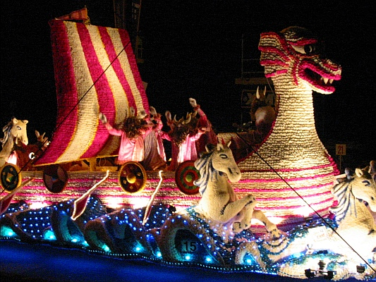

J'n'avais pas veu lé Ph'lip Desclios dépis la Bataille dé Flieurs et d'jà qué j'savais bein qué rein au mounde n'l'éthait fait y'aller quand je l'vis l'aut'jour à foui son failli becqu'toun d'patates tardives jé m'mîns dans la tête dé lyi faithe lé pèvre mounter au nez et d'même j'lis d'mandi, sans faithe la meinne dé rein, si i'y'avait 'té.
Après m'aver érgardé d'près pour s'asseurer qué j'n'avais pas perdu la tête i's'fit: "Tchi dgiablye qué t'a prîns, té, dé m'd'mander d'ité? Jé n'mé rapelle même pas quandtchi qué ch'tait, mais, si jé n'mé troumpe pas, chu jour là j'tais à faithe mon brancage, et jé m'pliaisi autrément mus à copper mes fossés à la faûcile qué j'n'éthais fait à aller vaie chutte salop'rie là! Mais", i' coutinuit en m'érgardant hardi d'travèrs, "tu n'tas pas m'dithe qué té, t'y fus? Jusqu'achteu jé n't'ai jamais prîns pour eun'achocre, mais, si t'y fus, il est grand temps dé mettre à l'asile".
"Ma fé", j'lis dis, "chest dé t'vaie tchi m'a fait y penser, car t'éthais sans doute gagni lé Prix d'Hounneu' si tu y'avais 'té dêdgîsi coumme eune marmouset".
Car, ou viyiz, lé Ph'lip et mé j'soummes vièrs Jèrriais, et j'nos entré pâlouns sans trop d'respé pour la politesse. "Mais" je m'fis "i' faut qué j'té dise la véthité. J'taîmes à en pâler l'aut'jour tchiques euns d'nous, et j'lus dis qué jé n'y'avais 'té qu'eunne seule fais, y'a soissante ans et pus, quand j'tais janne gamin, mais en êffet j'y'ai té deux fais, la deuxième y'a tchiques quarante ans, quand j'taîmes en Jèrri trais ou quat' jours en vacance avec nos filles, qui n'taient qu'mousses, et i' s'adounnit qué l'jour d'la Bataille ch'tait quand j'taîmes ichein: Les mouses bein seux voulaient à toute forche y'aller, et d'même j'y fûmes. Ah, mon garçoun, tchi mînsèthe! Assis là en pliein solé trais ou quatre heures à r'garder un tas d'peûles nos faithe des morgaches! Mais ché n'tait pas d'même dévant la dgèrre, quand j'y fus la preumié fais. Dans chu temps-là la Bataille ch'tait à Springfield, et ch'tait eune vraie fête jèrriaise, nou' counnaissait tout l'mounde, et pour les efants ch'tait coumme eun grand tchée d'chapelle. Touas les campragnards dêhallaient dé partout d'l'île, et djà qu'i' n'avaient pas grand raisoun dé s'rêjoui, car les patates né payaient pas, et bein des fèrmiérs craignaient dé jour en jour la visite du Dénounciateu'. Chu jour-là i' mettaient lus malheurs d'rièthe sé et en faisaient eun jour dé pliaisi et d'bouanne humeure".

"Ah, j'm'en rappele", sé fit l'Ph'lip, "mais au jour d'aniet ch'n'est certainement pus eune fête jèrriaise, chest eune spectaclye vuldgaithe pour attirer les touristes. I' fount mème v'ner d'en Anglièterre eun souo-distant maître éd cérémonie ou coumpèthe-jé n'sai pas tchi qu'i'l'appellent pour amuser la racaîlle. Et ch't'année, lé sé d'la Bataille, quand j'eus fini mon tripot d'bêtes j'nos mîmes, ma femme et mé, à r'garder la télévisioun, et j'm'en vais t'dithe, la mainièthe qué chu pèrrot là sé coumportit ch'tait si dêgouâtant qué j'freumîmes la télévisioun, car ses fariboles nos touânîtent lé tchoeu. Et d'penser qué y'a des gens qui prétendent qué chutte sal'té la est bouanne pour la r'noummée d'Jèrri! J'n'éthais jamais creu qué veindrait l'jour qué nous éthait hounte d'être Jèrriais!"
Eh bein, coumme ou' viyiz,lé Ph'lip n'a pas peux d'dithe chein qu'i' pense, et j'sai bein qué y'a des gens qui trouv'rount sé opinioun eune affrount. Quant à mé, sén opinioun né m'affrounte pas dutout.
J'sai bein qué partout l'île y'a bein des gens, hounnêtes et coumme-i'-faut, qui travaillent bein dû, niet et jour, à préparer l'exhibit pârouaissial, et ches gens là jé'l's'applaude. Ch'n'est pas countre ieux, les travailleurs, qué j'ai à r'dithe, ch'est countre les siens qui dirigent la Bataille et qu'en ount fait une cirque en mauvais goût. Hélas, tchiqu'nos pèthes éthaient dit d'vaie dé souo-disants artistes' du téâtre ou d'la télévisioun angliaiche am'nés ichein abaîssi la Bataille avec lus teurts dêjouâtants? Lé Ph'lip Desclios a raisoun: la Bataille, coumme oul'est coundite au jour d'aniet, né sert qu'a trainer la r'noummée d'Jèrri, déjà hardi tatchie, acquo pus dans la baue.
Lé vièr Trin'tais
16/9/1991
Viyiz étout: